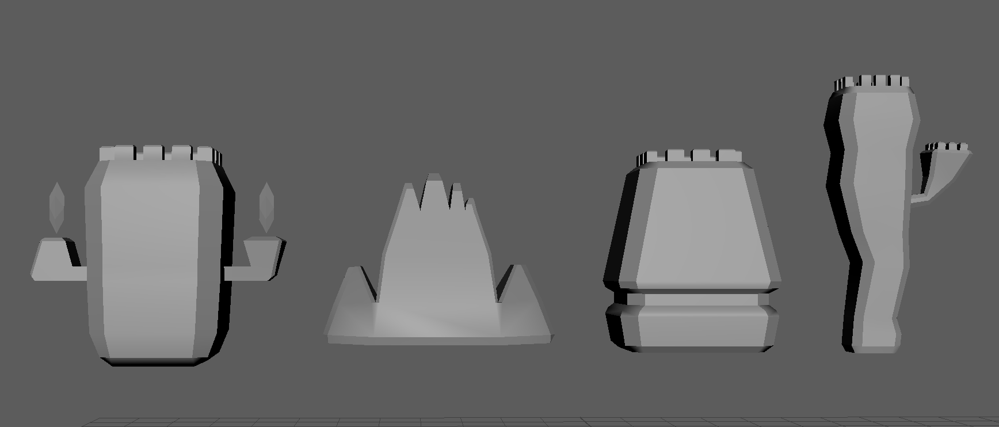
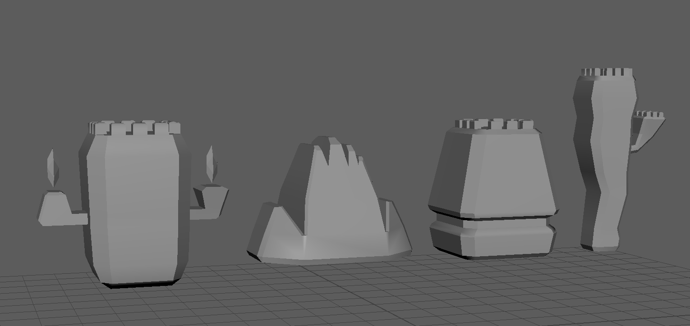
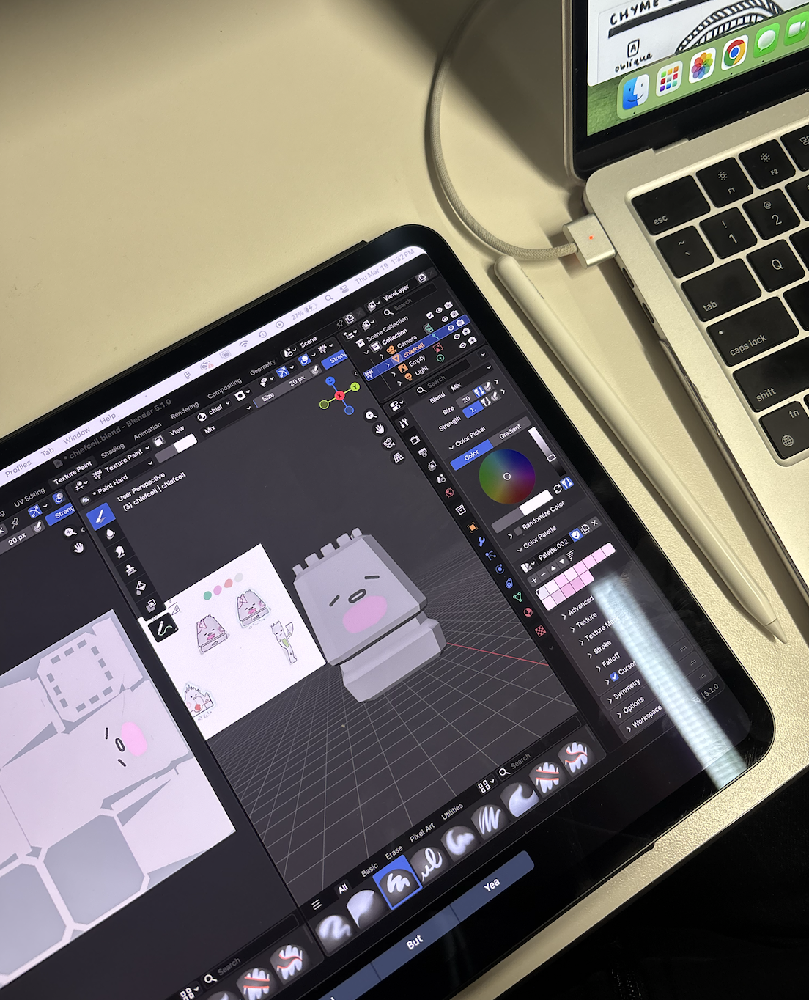

march 12, 2026
dear devdiaries,
After dividing the roles last week, I took to 3d modelling the four cell statues designed by Qingyue. It’s been a while since I used Maya so it took a while to get used to the program again and remember how to use it. Here’s a look at the plain 3d models:


After modelling, I exported the models as OBJs. I initially wanted to paint with Procreate, but had some difficulties with the mesh exporting strangely. Instead, I decided to try painting with Blender, which Roy taught me how to do (thanks Roy!). After painting, I exported the painted texture map and uploaded it to our shared Google Drive.
